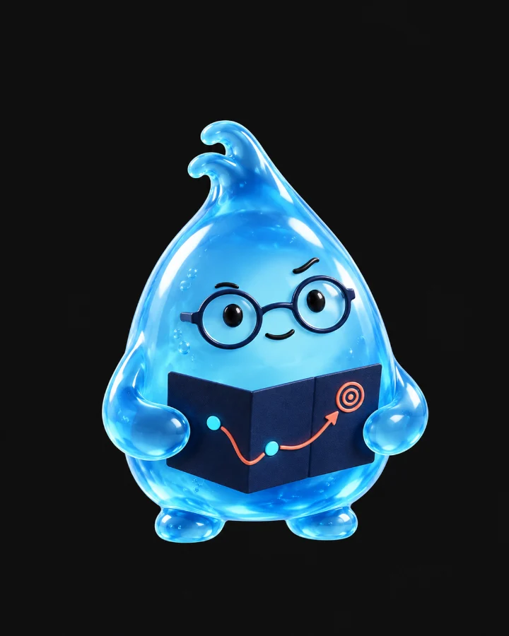

Make the TechnologyEasy to Understand.Make the ProofImpossible to Ignore.
Flow-Tech's edge begins with a credible explanation of what its water-conditioning technology does, where it fits, what has been measured, and which outcomes are application-specific. The objective is to turn technical complexity into purchase confidence without overstating the science.
A full marketing department. 27 roles. One operator.
Every seat a real agency fills, from strategy and design to paid media and analytics. Each Drop™ owns one job, hands its work to the next, and stops at a human gate before anything ships.
Strategy01
Marketing Lead
Chief of Staff
Sets weekly priorities, routes work across the agency and writes the morning brief.
How it works
DeliversDaily brief, decision queue, weekly plan
Works fromEvery bot’s output, KPIs, approvals backlog
Hands toAll departments
Sign-offOperator approves the top three moves each day

Strategy02
Brand & Growth Strategist
Strategist
Owns positioning, messaging by buyer, and the brief behind every campaign.
Checks every claim against the evidence registry and rewrites anything unsupported.
How it works
DeliversCleared copy, permitted and banned phrasing
Works fromEvidence registry, FTC guidance
Hands toWeb Developer, PR, Paid Media
Sign-offLegal on health, safety or pathogen claims
Governance27
QA Auditor
Inspector
Tests links, forms, tracking, privacy and accessibility before anything goes live.
How it works
DeliversQA reports, go/no-go checks
Works fromStaged pages, campaigns, emails
Hands toWeb Developer, Operator
Sign-offBlocks launch on any failed check
Every handoff. Every gate. One map.
HandoffNeeds human sign-off
The positioning platform
The Next Generation of Water Treatment Is Already Here.
Engineered water conditioning for facilities focused on scale management, system efficiency, and measurable operating performance.
01
Economic Performance
Know What Your Water System Really Costs.
Chemical spend is only one part of water-system economics. Maintenance, blowdown, downtime, energy, labor, equipment wear, and system performance may all affect lifetime cost. Quantify the existing program before proposing a change.
Make test conditions, baseline data, comparison methods, and documented limitations central to every case study. A technically informed buyer should be able to determine what was measured, where, and under which operating conditions.
Flow-Tech describes its proprietary electrical induction system as conditioning water rather than removing hardness minerals. Position the technology as a candidate solution for defined applications, subject to engineering review and site-specific evaluation.
Every Claim Has a Source. Every Source Has a Confidence Level.
An evidence registry turns existing case studies into usable sales assets while guarding against the single most damaging failure in technical marketing: impressive claims that cannot withstand scrutiny.
A / Primary standards & official data: Regulators, standards, government datasets, verifiable primary records.
B / Independent technical studies: Accessible full methodology, defined controls, verifiable authorship.
C / Company or customer evidence: Flow-Tech case studies, commissioned testing, testimonials, supporting documentation.
D / Hypothesis: Marketing proposition or application idea awaiting validation. Not publishable as a fact.
Examples requiring evidence review
University of Pittsburgh biofilm result: Flow-Tech describes a test with approximately 98% less sessile biofilm than its control. Use only with the full protocol and approved scope. Do not translate this into an infection-prevention or disinfection promise.
Water savings at Loyola Law School: Flow-Tech reports 740,500 gallons saved over three months. Confirm baseline, metering, weather, operating conditions, and competing interventions.
USDA salt reduction: Flow-Tech references a facility previously using more than 750 pounds of salt monthly. Confirm the previous system, operating context, and documented comparison before lead-copy use.
Hospital Legionella-related story: High-risk. Never equate customer observations with pathogen control certification, potable-water safety, or prevention of illness. Requires engineering, legal, and claims review.
Residential adoption: Flow-Tech's site has reported 60,000+ Americans using its residential technology. Attribute to the company and confirm current wording and distribution agreement before repeating externally.
How we talk about results
Trust Is What Sells This.
We describe Flow-Tech as water conditioning. It doesn’t purify or filter water, and we don’t say it does.
Hardness minerals stay in the water. We never suggest they’re removed or that the water is softened.
Some sites will still need chemicals, sanitizers or disinfectants. We say so up front rather than promise you can stop using them.
We only make health, pathogen, corrosion or environmental claims we can back up with evidence.
A result from one site applies to that site. We only describe a wider benefit when evidence from more sites supports it.
Simulations, 3D illustrations and modeled figures are labeled as such wherever they appear.
Every result links to how it was measured and what the study couldn’t show.
Claim-risk review workflow
1Source Scout
2Claim Extractor
3Risk Classifier
4Contradiction Check
5Technical Reviewer
6Audience Writer
7QA Reviewer
8Human Publish Approval
Output: Source-backed copy variants, reviewer comments, permitted phrasing, disallowed phrasing, citation links, and version history.
Brand production system
Build a Category Presence Without Building a Creative Department.
Content initiatives
Rewrite high-value site sections around engineering relevance, measurable outcomes, and industry-specific objections.
Produce paired executive case studies and technical appendices.
Create an accurate 3D engineering visual library for scale, flow, heat exchange, and treatment-system anatomy.
Publish a glossary: hardness vs. scale, conditioning vs. softening, fouling, corrosion, biofilm, blowdown, and water-management plans.
Maintain approved message libraries by industry, audience, and evidence tier.
Create customer and specifier presentations from canonical evidence records, not disconnected slide decks.
Agent workflow — Content Factory
1Approved evidence
2Buyer-need brief
3Landing-page draft
4Technical cross-examination
5SEO/accessibility checks
6Approval
7Deployment
8Measurement
9Iterative revision
Completion criteria
A first-time technical buyer can identify fit and limitations. Every published material claim has an owner and source. High-value case studies have a technical appendix. Every page has an appropriate next step.